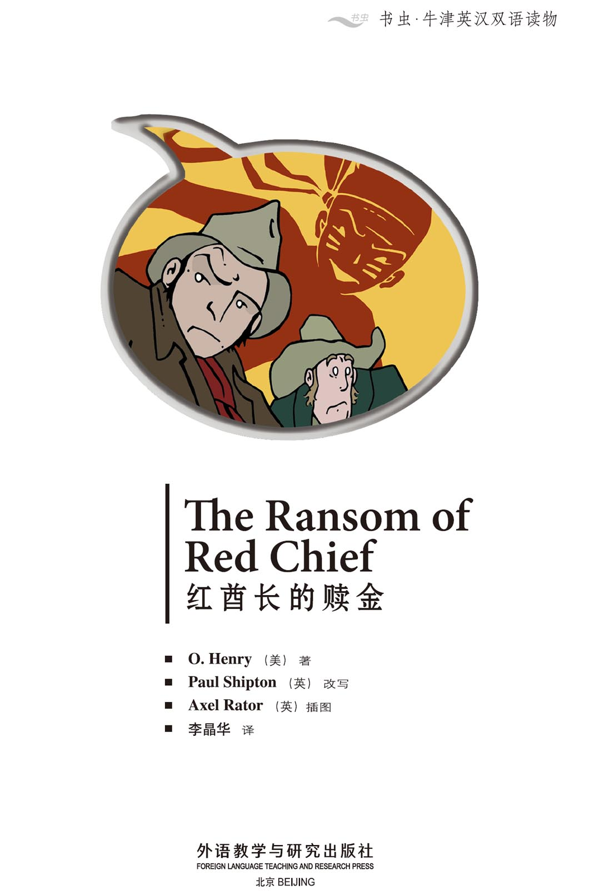
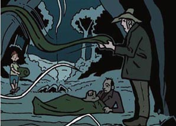
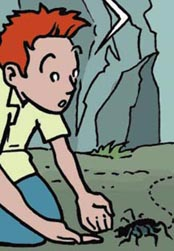
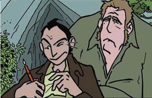
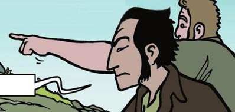
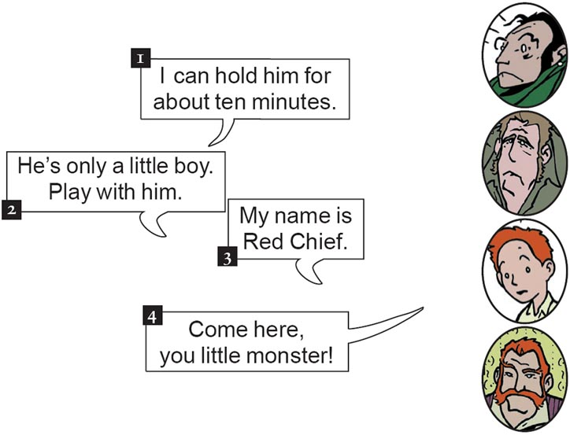
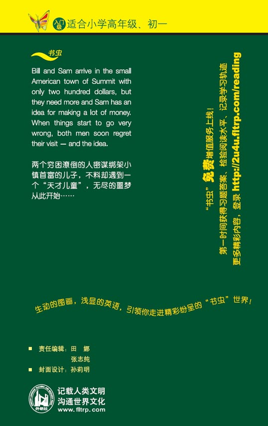

扉页

Copyright
Copyright © Foreign Language Teaching and Research Press 2006
All rights reserved. No part of this publication may be reproduced or distributed by any means, or stored in a database or retrieval system, without the prior written permission of Foreign Language Teaching and Research Press.
本书版权由外语教学与研究出版社独家所有。如未获得该社书面同意，书中任何部分之文字及图片，不得用任何方式抄袭、节录、翻印或存储利用于任何数据库及检索系统等。
Published by Foreign Language Teaching and Research Press
No. 19 Xisanhuan Beilu
Beijing, China 100089
http://www.fltrp.com
版权页
京权图字01-2006-2799
Originally published by Oxford University Press, Great Clarendon Street, Oxford. © 2000 This edition is licensed for sale in the People's Republic of China only and not for export therefrom.
'Oxford' is a registered trademark of Oxford University Press.
图书在版编目（CIP）数据
红酋长的赎金：英汉对照／（美）亨利（Henry, O.）著；（英）希普顿（Shipton, P.）改写．—北京：外语教学与研究出版社，2006.5（2013.6重印）
（书虫·牛津英汉双语读物）
书名原文：The Ransom of Red Chief
ISBN 978-7-5600-5530-5
Ⅰ．红… Ⅱ． ①亨… ②希… Ⅲ．①英语—语言读物 ②短篇小说—美国—近代 Ⅳ．H319.4: I
中国版本图书馆CIP数据核字（2006）第037883号
出版人：蔡剑峰
责任编辑：田 娜 张志纯
封面设计：孙莉明
出版发行：外语教学与研究出版社
社 址：北京市西三环北路19号（100089）
网 址：http://www.fltrp.com
书 号：ISBN 978-7-5600-5530-5
* * *
制售盗版必究 举报查实奖励
版权保护举报电话：（010）88817519
目录
King Arthur
ACTIVITIES Before Reading
ACTIVITIES
Before Reading
1. Look at the front cover of the book and guess the answer to these questions.
1) Who is Red Chief?
a Sam, the man on the left.
b Bill, the man on the right.
c A famous man in the west.
2) When does the story happen?
a 100 years ago.
b In the year 2000.
c 500 years ago.
3) Imagine you are Bill or Sam. How do you feel?
a Happy.
b Angry.
c Afraid.
2. Read the back cover of the book. How do Sam and Bill try to make a lot of money? Guess the answer.
1) They take money from a shop.
Yes/No
2) They kidnap a boy.
Yes/No
3) They take horses and sell them.
Yes/No
ACTIVITIES While Reading
ACTIVITIES
While Reading
1. Are these sentences true (T) or false (F)?
1) Sam and Bill have no money.
T/F
2) They look for jobs in Summit.
T/F
3) Ebenezer Dorset is the richest man in town.
T/F
4) They decide to kidnap Ebenezer Dorset.
T/F
5) Johnny is afraid.
T/F
6) Bill stays with Johnny.
T/F
7) Johnny says he is called Red Chief now.
T/F
2. Complete the sentences.

I'm _________. Let's sleep.

It's a little _________, Bill.
Do you want to hold it?

We must _________ a letter now.

Wait a _________!
Where's the boy?
3. Match the following sentence halves to make five complete sentences.
1) Bill is afraid ...
2) Johnny laughs ...
3) Johnny runs away ...
4) The old man takes the letter ...
5) Johnny comes back ...
a when Bill tries to catch him.
b when he can play games with Bill.
c when Sam goes to the shop in town.
d when Sam leaves.
e when Sam is back.
4. Answer these questions.
1) Who brings Dorset's answer to the tree?
2) What does Dorset ask for in his letter?
3) What do Sam and Bill want to do?
4) How does Johnny feel when he sees his house?
5) How long can Mr Dorset hold his son?
6) What do Sam and Bill do when Dorset is holding Johnny?
ACTIVITIES After Reading
ACTIVITIES
After Reading
1. Put these sentences in the correct order.
a Sam and Bill write a ransom letter.
b Mr Dorset does not pay the ransom.
c They run out of town.
d Sam and Bill take Johnny home.
e Johnny says that he is called Red Chief.
f Sam takes the letter to town.
g They kidnap Johnny Dorset.
i Sam and Bill arrive in Summit.
h They pay money to Mr Dorset.
2. Match the names and pictures with the words.
Sam Bill Johnny Mr Dorset

3. Complete this summary of the story. Use these words:
| afraid | arrive | boy | escape |
| fight | give | hits | money |
| name | spider | stays | ransom |
Sam and Bill only have $200 when they ______ in the small town of Summit. They want to kidnap the son of the richest man in town. Johnny Dorset is a small ______ but he gives Sam and Bill a good ______. They take him into the woods. Bill ______ with Johnny, while Sam takes the horses back to town. Johnny says that his ______ is Red Chief now. He plays and plays with Bill! He puts a ______ in his bed; he ______ him on the head. Soon Bill is very ______ of the little boy!
Bill and Sam write a letter to Johnny's father. They ask for a big ______. But when Mr Dorset answers, he says no. He tells Sam and Bill to give him ______. Then they can ______ from Johnny! Sam and Bill say yes. They ______ the money and then run out of Summit.
4. Write or draw a new ending for the story. Johnny escapes from his father and runs after Sam and Bill. What happens when he catches them?
_________________________
_________________________
_________________________
_________________________
_________________________
参考译文
参考译文
The Ransom of Red Chief
红酋长的赎金
Come on, Bill. We're here.
But ... the train isn't stopping!
(Aaaagh!)
(Town of Summit
Have a Nice Day.)
I'm not having a nice day.
快点儿，比尔。咱们到了。
可是……火车没有停啊！
（啊……！）
（萨米特镇
祝您愉快！）
我今天可并不愉快！
How much money have we got?
Only two hundred dollars.
But I've got an idea ... Kidnap! We can kidnap someone here.
Who? There's nobody rich in this town.
You're wrong, Bill. Look around.
(The Dorset Bank
Ebenezer Dorset Street
The Dorset Store)
Excuse me, Miss. Who is Ebenezer Dorset?
The richest man in town, of course.
我们有多少钱？
只有两百美元。
不过我有一个办法……绑架！我们可以在这儿绑架个人。
绑架谁呢？这个镇上没有富人啊。
你错了，比尔。看看这四周吧。
（多塞特银行
埃比尼泽·多塞特大街
多塞特商店）
小姐，打扰一下。请问埃比尼泽·多塞特是谁啊？
当然是镇上最有钱的人。
And do Mr and Mrs Dorset have any children?
One boy. His name's Johnny. He's a lot of trouble.
Well ... ?
OK.
The next day ...
Look at that house!
Good! They've got lots of money.
There he is! He's a nice little boy.
What's he doing?
Ha, ha, ha!
那么多塞特夫妇有孩子吗？
有一个男孩儿，名叫约翰尼。他总是惹麻烦。
怎么样？
好吧。
第二天……
瞧瞧那房子！
很好！他们很有钱。
他在那儿！是个不错的小男孩儿。
他在干什么呢？
哈哈哈！
Let's get him!
Oh, good! Someone wants a fight!
(Smack! Bang! Ouch!)
Come on, Bill.
But he's STRONG.
Ouch! My head!
Think about all that money, Bill.
I feel better.
咱们去抓住他！
哼，好啊！有人想打架啊！
（啪！砰！哎哟！）
快点儿，比尔。
可是他太有劲儿了。
哎哟！我的头！
想想就要到手的钱吧，比尔。
我感觉好点儿了。
We're here.
Don't be afraid, Johnny. You can go home soon.
Who's afraid? I'm not afraid! I don't want to go home.
You make a fire and give the boy dinner, Bill. I'm taking the horse back to town.
OK, Sam. Johnny and I can be friends.
Yes! Ha, ha, ha!
我们到了。
不用害怕，约翰尼。你很快就可以回家了。
谁害怕呀？我才不怕呢！我不想回家。
你生火给这孩子做点儿晚饭，比尔。我去把马车赶回镇上。
好的，萨姆。约翰尼和我会成为朋友的。
没错！哈哈哈！
Look! There are some feathers.
What are you doing, Johnny?
My name isn't Johnny.
My name is Red Chief.
Money, money, money ...
Stop!
Oh no! Help!
看！这儿有些羽毛。
你在干什么呢，约翰尼？
我不叫约翰尼。
我叫红酋长。
钱，钱，钱……
站住！
哦不！救命！
Ha, ha, ha!
Very funny.
Oh, good! It's you, Sam.
Of course it's me! What's wrong with you, Bill?
I'm tired. Let's sleep.
I like this forest.
I like camping too.
Why is your nose red, Bill?
My best friend can walk on his hands.
How hot is the sun?
I don't like girls.
哈哈哈！
很有趣。
哦，太好了！萨姆，你回来了。
当然是我！你怎么了，比尔？
我累了。咱们睡觉吧。
我喜欢这片森林。
我也喜欢野营。
你的鼻子怎么红红的，比尔？
我的好朋友能倒立着走。
太阳有多热？
我不喜欢女孩子。
Sam sleeps.
Help!
It's only a dream.
Help!
What? What's happening?
萨姆睡着了。
救命啊！
幸好只是个梦。
救命啊！
怎么了？发生了什么事？
Oh no! Help! Get it out!
What is it, Bill?
It's a little spider, Bill. He's my new friend.
Do you want to hold him?
Come here, you little monster ...
Ha, ha, ha!
哦不！快来帮我！把它拿出来！
是什么东西，比尔？
比尔，只不过是一只小蜘蛛。他是我的新朋友。
你想拿着它吗？
过来，你这个小魔头……
哈哈哈！
Now, Bill, it's OK.
But ... but ...
Now listen, Johnny. You go and play over there.
We must write a letter now. OK, Bill?
OK, Sam.
Here's a good one!
行了，比尔，别闹了。
可是……可是……
嗨，听着，约翰尼。你到那边玩儿去。
现在我们得写封信。好吗，比尔？
好吧，萨姆。
这儿有个好东西！
Mr Ebenezer Dorset:
We have your son. Do you want to see him again?
Then you must give us a ransom of $ 1,500.
Give us the money tonight. There are three big trees near the Summit River. Put your answer in the tallest tree.
Do not tell the police about this.
From
What names can we put?
I know ...
Two desperate men
Look at this letter, Bill! It's money in the bank.
埃比尼泽·多塞特先生：
你的儿子在我们手上。你还想再见到他吗？
那么你就必须给我们1,500美元的赎金。
今晚把钱交给我们。萨米特河边有三棵大树。把你的回信放到最高的那棵树上。
不要报警。
咱们应该署什么名字呢？
我知道了……
两个亡命之徒
瞧瞧这封信，比尔！钱就要到手了。
Wait a minute! Where's the boy?
Johnny!
Where are you?
Look! There's something over there!
Where?
Ha, ha, ha!
(Crack!)
Bill!
等一下！那个男孩儿哪儿去了？
约翰尼！
你在哪儿？
看！那边好像有个东西！
哪儿？
哈哈哈！
（啪！）
比尔！
Come on, Bill. Get up!
Ouch, my head!
Johnny. You must be nice to Bill.
OK, Sam.
Good. I'm going to town.
No!
行了，比尔。起来吧！
哎哟，我的头！
约翰尼，你要对比尔友好些。
好吧，萨姆。
好了。我要去镇上了。
不要！
I must get this letter to Mr Dorset.
But ... but ...
He's only a little boy, Bill. Play with him.
But ... but ...
See you later.
Good! Let's play.
Oh dear!
我得把这封信给多塞特先生送去。
可是……可是……
他不过是个小男孩儿，比尔。陪他玩儿会儿。
可是……可是……
回头见。
好了！咱们玩吧。
哦天哪！
Go faster! Go faster!
Oh no! Not the snake, PLEASE.
Come on, Bill.
I can't wait any more! Sam can't stop me now!
Come here, you little monster!
Ha, ha, ha! You can't catch Red Chief!
再快点儿！再快点儿！
哦，不！不要玩蛇，求你了。
来呀，比尔。
我再也等不下去了！现在萨姆也拦不住我了！
过来，你这个小魔头！
哈哈哈！你抓不住红酋长！
(General Store)
Excuse me. Is there a post office near here?
Yes.
And where is it?
Here.
I have a letter for someone in Summit. When can it arrive?
Today.
Well ... thank you.
（杂货店）
请问，这附近有邮局吗？
有。
在哪儿呢？
在我这儿。
我有封信要寄到萨米特镇上去。什么时候能寄到呢？
今天。
哦……谢谢。
Sam walks back to the camp. He is thinking about the ransom money.
I want a big house and a car and the best clothes and ...
Hello, Sam.
Where's the boy?
He isn't a boy, Sam. He's a monster. Where is he? I don't want to know.
Bill, is your heart strong?
Yes. Why?
Look behind you.
萨姆在回营地的路上，边走边想着赎金。
我想要一座大房子、一辆车、最好的衣服，还有……
你好，萨姆。
那男孩儿在哪儿？
他不是男孩儿，萨姆。他是个魔鬼。他在哪儿？我可不想知道。
比尔，你是不是足够坚强？
是啊，怎么了？
看看你身后。
Hello.
Help me, Sam! Help me!
It's OK, Bill.
Sam watches the time.
Bill watches the boy.
Where are you going, Sam?
To get our money.
No! Not again! You can't leave me with HIM again!
This is the last time, Bill. And then we can take the money and the boy can go home.
The boy can go home, the boy can go home, the boy ...
嗨。
救救我，萨姆！救救我！
没事儿的，比尔。
萨姆看着时间。
比尔看着男孩儿。
你要去哪儿，萨姆？
去拿回我们的钱。
不！不要再这样了！你不能再让我跟他呆在一起！
这是最后一次，比尔。然后我们就能拿到钱，男孩儿就能回家了。
男孩儿就能回家了，男孩儿就能回家了，男孩儿……
Later ...
I can watch from this tree.
Now I can see everything.
That isn't Dorset. Perhaps this boy works for him.
过了一会儿……
我可以爬上这棵树监视情况。
现在我一览无余。
那不是多塞特。也许这个男孩儿是他雇的。
I've got it!
Sam runs back to the camp.
I'm coming, Bill!
... the boy can go home, the boy can ...
Bill! I'm back and I've got it!
Wait a minute! There's no money in here. There's only a letter.
Oh no!
我拿到了！
萨姆跑回了营地。
我回来了，比尔！
……男孩儿就能回家了，男孩儿就能……
比尔！我回来了，我拿到了！
等一等！这里面没有钱。只有一封信。
哦不！
To Two Desperate Men:
Thank you for your letter.
My answer is no.
The ransom is very high.
Very high!
I have another idea for you.
You bring Johnny home and you give me $ 200.
When Johnny is with me at home, you can escape.
Ebenezer Dorset
致两个亡命徒：
谢谢你们的来信。
我的回答是“不”。
赎金太高了。
太高了？！
我给你们出个主意。
你们把约翰尼带回家，再给我两百美元。
约翰尼回到家里跟我在一起后，你们就可以解脱了。
埃比尼泽·多塞特
WHAT? We give money to HIM?
Yes!
That's stupid! We're the kidnappers!
Yes!
Look at this! Let's play.
OK, Bill. Let's give him the money.
How much have we got?
Two hundred dollars.
什么？我们给他钱？
是啊！
这太傻了！我们才是绑匪！
是啊！
瞧瞧这个！咱们玩儿吧。
好吧，比尔。咱们把钱给他吧。
我们有多少钱？
两百美元。
One hour later ...
Come on, Johnny.
Where are we going?
It's a surprise.
A nice one.
Wait a minute! This is MY house. I don't want to go home!
Now you're in BIG trouble.
Quick, Sam! Knock on the door!
一小时以后……
快点儿，约翰尼。
我们要去哪儿呀？
一个你想不到的地方。
一个好地方。
等等！这是我家！我不想回家！
现在你们惹上大麻烦了。
快点儿，萨姆！快敲门！
Good evening.
Mr and Mrs Dorset? Here's your money!
And here's your son.
I can hold him for about ten minutes.
Let's go, Sam!
(You Are Now Leaving the Town of Summit
Have a Nice Day!)
We are not having a nice day!
晚上好。
是多塞特先生和太太吗？这是你们要的钱！
还有你们的儿子。
我大概可以拽住他十分钟。
咱们走吧，萨姆！
（您即将离开萨米特镇
祝您愉快！）
我们过得可并不愉快！
封底
